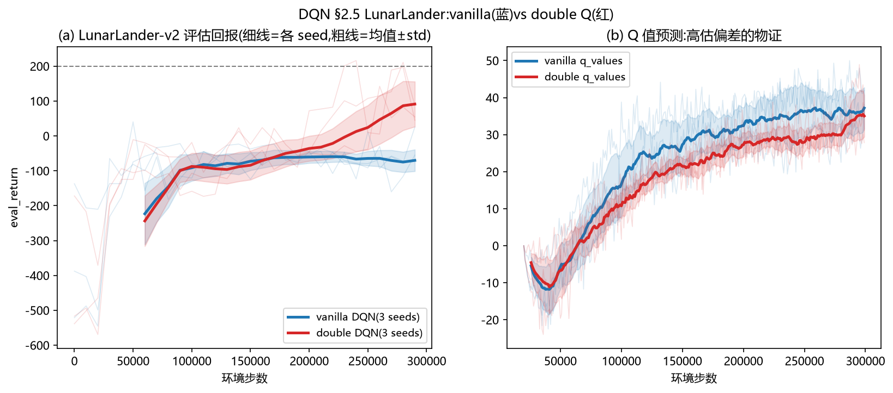
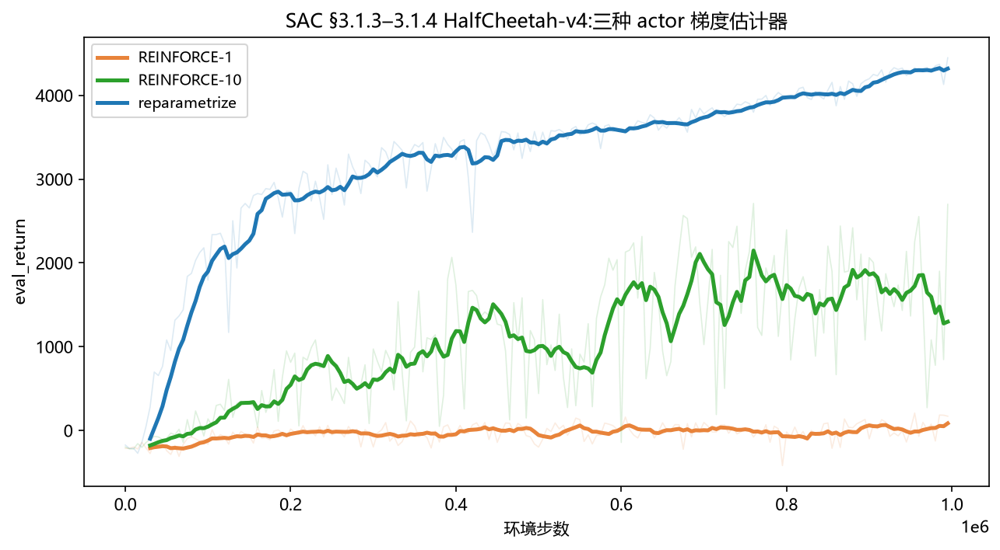
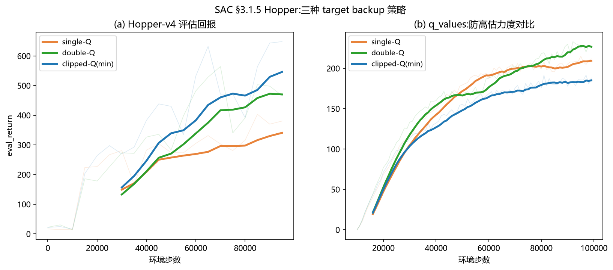
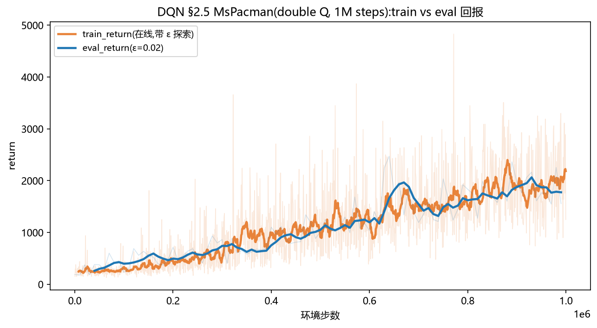
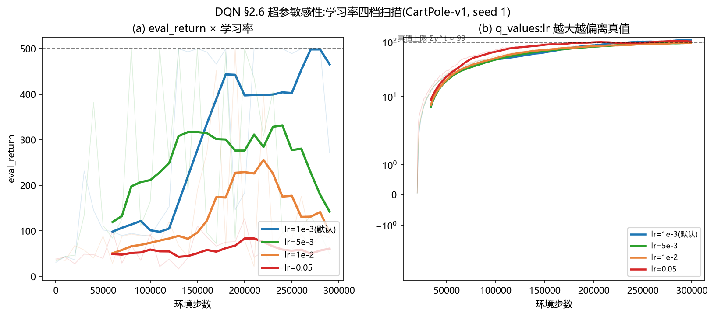

HW2 的数据用一次就扔,HW3 想让旧数据反复可用。代价是 bootstrap: 靶子里装着自己的估计——安静,但会有方向地错。本讲就是怎么管住这种错。
HW2 的策略梯度有个奢侈的浪费:每条 rollout 只能用于一次更新,然后丢弃—— 因为 ∇J 是对当前策略分布取的期望,旧数据估算的是旧目标。能不能让旧数据反复使用? 这是 off-policy 的吸引力:样本效率可以提升一个量级(真机/慢仿真里,样本就是钱)。
绕开"旧数据有偏"有两条路:① 重要性采样修正(IS)——无偏,但方差随轨迹长度指数爆炸 (HW2 §9.4 已证);② bootstrap——靶子写成"一步真奖励 + 自己的估计垫付余生" (y = r + γ·Q̂(s′))。它对数据是谁采的几乎不在乎(详见③④),却引入了新误差: 偏差,且偏差会复利。HW3 的全部技术,本质上都是偏差控制。
问题的另一半:策略从哪来?HW2 直接学策略网络;HW3 改为学"打分表"Q, 策略从分数里读出来——离散动作可以挨个比大小(argmax 免费), 连续动作没法挨个比(max_a Q(s,a) 是连续优化问题),这是 DQN 与 SAC 分家的原因。
主线矛盾一句话:bootstrap 让数据可以复用,但靶子里装着自己的估计—— 它什么时候能信(保修条款),什么时候会把错误滚成雪球(死亡三合一)?
V^π(s) = E_π[ r₀ + γr₁ + γ²r₂ + … | 从 s 出发按 π 玩下去 ] Q^π(s,a) = E_π[ r₀ + γr₁ + γ²r₂ + … | 从 s 出发先做 a,再按 π 玩下去 ]
| 符号 | 通俗含义 |
|---|---|
| V^π(s) | 状态的身价:"这个状态值多少分" |
| Q^π(s,a) | 动作-状态对的身价:"在 s 做 a 值多少分" |
| γ(gamma) | 折扣:明天的 1 块值今天的 γ 块(γ=0.99 时,100 步后的 1 块只剩 0.37) |
| E_π[·] | 按策略 π 玩下去,对所有可能的未来取平均 |
Q^π(s,a) = r(s,a) + γ · E_{s′}[ V^π(s′) ] (按 π 玩)
Q*(s,a) = r(s,a) + γ · max_{a′} Q*(s′,a′) (最优:以后每步都选最好的)
含义:一步动作的身价 = 当场拿的 + 打折后的"余生估值"。 最优版本(第二行)说:如果打分表已经全对,把它代入自己,一分不差——这叫不动点(fixed point), 它是后面所有 bootstrap 更新的"保修条款"。
π*(s) = argmax_a Q*(s,a)
打分表全对时,最优策略就是"每个状态选分最高的动作"——离散空间里挨个比一遍就行,免费。 所以 HW3 不再直接学策略,而是学打分表 Q:策略从分数里"读"出来(这叫"从 Q 派生")。
靶子: y = r + γ(1−done) · max_{a′} Q̂(s′,a′)
回归: 让 Q(s,a) 逼近 y(MSE)
直觉: 走一步真奖励,余生用自己的估值垫付(bootstrap,自举)
为什么敢垫付?因为不动点性质:估计全对时垫付无误差,估计接近时对的不多。 数学原理:表格情形下,"算靶子"这个操作(Bellman backup)是 γ-收缩—— 任何两张打分表过一遍它,差距必然缩到 γ 倍,反复作用必收敛到唯一不动点 Q*(Banach 不动点定理)。 这就是 bootstrap 的保修条款;神经网络(函数逼近)上场后条款失效——③ 的死亡三合一。
replay buffer / target network / ε-greedy 是工程稳定器,double Q 是高估的解药—— ③ 逐个讲它们各自在灭什么火,这里先记住主体:DQN 学的是一张打分表,argmax 就是它的策略。
连续动作没法挨个比大小,于是学一个 actor 网络去逼近 argmax:
目标: max_θ E_{s~D, a~π_θ} [ Q(s,a) ] 让 actor 出的动作在 critic 那里分尽量高
梯度怎么算?两条路线:
路线 A(REINFORCE): E[ ∇log π_θ(a|s) · Q(s,a) ]
夸/骂:critic 只给分数,不说怎么改(噪声大)
路线 B(reparametrize): a = μ_θ(s) + σ_θ(s)·ξ, ξ ~ N(0,1)
∇θ E_ξ[ Q(s, μ_θ(s)+σ_θ(s)ξ) ] = E_ξ[ ∇θ Q(s, μ_θ+σ_θξ) ]
梯度穿过 critic 直传(安静,是 SAC 的实际选择)
路线 B 的数学原理(重参数化技巧):采样本身含 θ、不可导;
把动作改写成"参数决定的确定函数 + 与 θ 无关的外部噪声 ξ"——期望变成对 ξ 取,
ξ 不含 θ,期望号里的函数却处处可导,梯度顺着"Q 对 a 的导数"流回 actor 参数。
PyTorch 里就是 .rsample()(带梯度的采样)与 .sample()(不带)的区别——⑥ 还会碰到。
新目标: E[Q] + β · H(π), H(π) = E[ −log π(a|s) ] (熵:分布有多随机)
温度 β 是"随机性换奖励的汇率":β 大,宁可不确定也要多试(探索);β 小,快收敛到贪心。 熵出现在两个地方:actor 的 loss 里(鼓励它别太笃定)和 critic 的靶子里(让 Q 也学会给随机性记账—— 这叫 soft Q)。这也是连续空间取代 ε-greedy 的探索机制。
| DQN(离散) | SAC(连续) | |
|---|---|---|
| 打分表 | s → 每个动作一值(向量输出,argmax 免费) | (s,a) 拼接 → 单值(现问现答) |
| 策略 | argmax Q(无独立 actor) | actor 网络(学出来的 argmax) |
| 探索 | ε-greedy 调度 | 熵奖励 + 温度 β |
| 防高估 | double Q(选评解耦) | clipped-Q(两个 critic 取 min) |
和 HW2 的关系也一并记住:GAE 的 λ 与本讲的 N-step 是同一个偏差-方差旋钮的两端—— HW2 你拧在偏方差侧(MC 为主),HW3 拧到底(N=1,全 bootstrap)。 两份作业因此一个讲方差、一个讲偏差。
TD 回归是"半梯度":算梯度时假装靶子与参数无关(torch.no_grad)。 但若靶子和预测共用同一网络且每步都动,就形成正反馈:预测涨 → 靶子涨 → 预测接着涨。 解法:冻结一个旧网络专门出靶——硬更新(每 K 步拷贝,像爬楼梯)或 Polyak 软更新(每步挪 τ=0.005,永远慢半拍)。 注意:target network 只治"晃"(反馈环),不治"歪"(系统性高估)——两种病,别混淆。
max 是凸函数,Jensen 给出 E[max Q̂] ≥ max E[Q̂]:Q̂ 逐点无偏也没用, 取 max 专门挑"运气好的高估"(10 个标准正态取 max,期望 ≈ +1.54)。 而且 bootstrap 会把偏高的值当靶子回灌,逐轮复利。解法:用在线网络选 a′、target 网络评分—— 选择器与评估器的噪声不同源,max 不再专挑被高估的那次。实测 DDQN > DQN 稳定可复现: 高估不是理论焦虑,是实测差距。
表格的 γ-收缩保证收敛;函数逼近的"拟合"步骤在 ∞-范数下可能扩张,复合后不再收缩 → 可能发散。 作业特意安排你亲眼看:CartPole 学习率调大 50 倍,Q 值胀过真值上限并随换靶台阶式上抬、 critic 误差大两个数量级、策略学不起来(见⑤ 翻车博物馆)。稳定器(target net、梯度裁剪、lr 调度)只能压振幅,治不了根。
连续空间 max_a Q(s,a) 是连续优化问题,没法在线求解。DQN 的 argmax 免费,是因为动作可数。 于是引入 actor 近似 argmax——actor-critic 分家:critic 负责评价任意 (s,a),actor 负责提出值得评价的 a。
没有 max 算子了,但 actor 会专挑 critic 高估的动作去钻(reparametrize 梯度直接朝 Q 的虚高尖峰爬), 效果等同 max 偏差。解法:训练两个 critic,靶子取两者较小的——故意保守。 clip-Q 和 DDQN 治的是同一个病(过估计),理解 TD3/SAC 都从 DDQN 出发会顺很多。
off-policy 的收敛前提是每个 (s,a) 被无穷次访问;行为策略越学越确定,旧区域就再也不去了。 离散空间留 ε 概率乱动(ε-greedy 调度);连续空间给分布发"随机性奖金"(熵奖励,温度 β 是汇率)。 作业里 β 固定(yaml 手调);原论文用对偶变量自动调(目标熵 −dim(A)),那是拓展阅读。
这一节不只摆结果,更教你怎么读 RL 的学习曲线:看斜率、看绝对值、看均值背后的单局分布。四张图,四种读法。

| 配置 | 末5次 eval(3 seeds) | 最优单局 | q_values 末段 |
|---|---|---|---|
| vanilla | −57 / −52 / −91 | 11–40 | ~37(更高!) |
| double Q | 89 / 130 / 59 | 216 / 211 / 142 | ~30(更低) |

REINFORCE-1 贴地 97;REINFORCE-10 能学但震荡 1461;reparametrize 快且稳 4316。

single-Q 350 / double-Q 440 / clipped-Q 544。

eval 1776(课程基准 ~1500),重录复跑 1602/峰值 1856。行为视频在动物园,会躲鬼、会抢豆。
先在小任务上证明算法正确,再上大任务(大任务学不会的锅,90% 是任务难度/探索/奖励,不是实现): ① Pendulum 只训 critic:Q 应稳定在大负数(奔向 −∞ 或停在 0 都是 bug); ② actor 只受熵奖励时,熵应升向 U[−1,1] 的最大熵 log 2 ≈ 0.69; ③ InvertedPendulum 两种 actor 梯度都应到 ~1000(实测 826 / 920)。
展品按病因分四类,正好对应全站的"失败世界观":分布偏移(HW1)、方差(HW2)、 偏差(HW3,本馆主场)、信息不足(POMDP 实验)。调试任何 RL 系统,先归因到哪一类,再上对应的药。

本讲所有实现集中在四个文件。先记住数据流,再读代码:
env.step(a) → replay_buffer.insert(s,a,r,s′,done剔除截断)
↓ 每步
batch = buffer.sample(128) → agent.update(batch):
DQN: critic 回归 [r + γ(1−d)·max_a′ Q_target(s′,a′)];每 K 步 target ← online
SAC: critic 回归 [r + γ(1−d)·(Q_targ(s′,a′~π) + βH)];actor 最大化 E[Q]+βH;Polyak 软更新
↓ 每 eval_interval
eval_env 用近乎贪心策略跑 10 局 → 记 eval_return
cs285/agents/dqn_agent.py — get_action(ε-greedy)/ update_critic(no_grad 靶子 + gather)/ update(换靶节奏)cs285/agents/soft_actor_critic.py — update_critic / entropy(rsample!)/ actor_loss_{reinforce,reparametrize}/ q_backup_strategycs285/infrastructure/replay_buffer.py — 普通版 vs 省内存版(on_reset 存首帧,insert 只存最新帧,索引窗口拼 4 帧)cs285/scripts/run_hw3_{dqn,sac}.py — 主循环接线;done 与 TimeLimit 截断的区分在这里N=1 的靶子 r + γ·max Q(s′,a′) 中,r 已观测(无需修正),max 不引用任何未来动作; N 步靶子里的多步奖励按行为策略 π′ 采样,要修正必须乘似然比;N→∞ 时权重退化为全轨迹似然比连乘, 方差随 horizon 指数爆炸(第 2 讲 §9.4)。bootstrap 的本质:用偏差换掉 IS 的方差。
max 是凸函数,Jensen:E[max] ≥ max E(10 个标准正态取 max 期望 ≈ +1.54)。 double Q 解耦"选"(online argmax)与"评"(target 打分),选择器挑中的不再是评估器的噪声峰值。
不能。它只稳定"靶子会躲"的反馈环;靶子本身的系统性偏高纹丝不动。 高估要靠 double/clipped Q。钉住歪靶子,只是稳定地歪着。